Cathedral Static
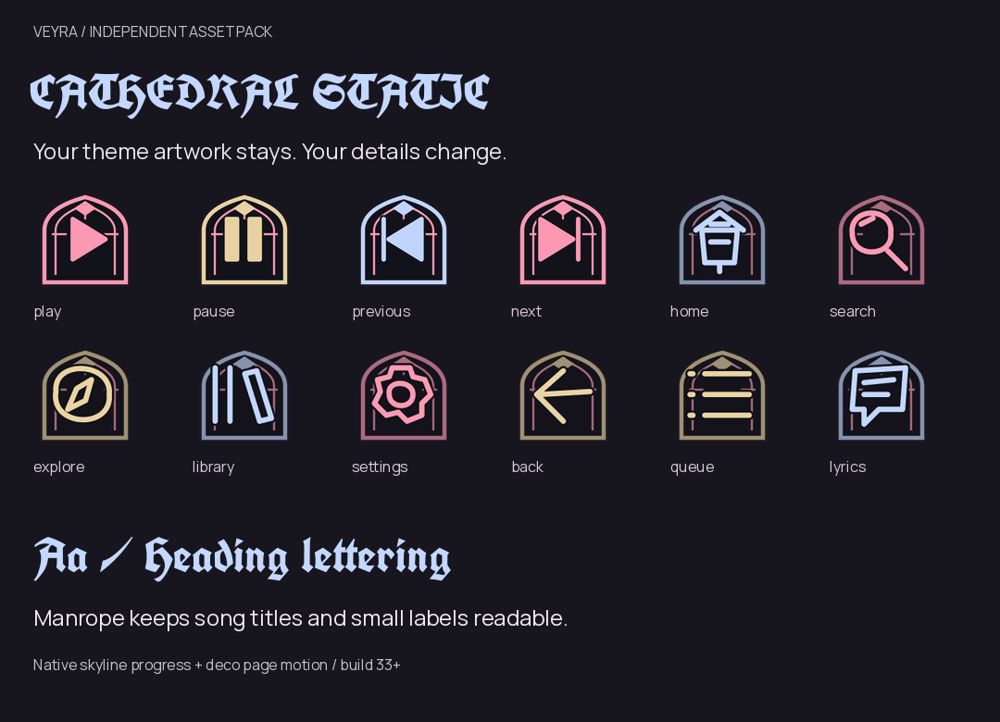
Pointed stained-glass frames, cobalt and crimson tracery, silver blackletter and skyline progress.
All 119 runtime roles · Pack ZIP

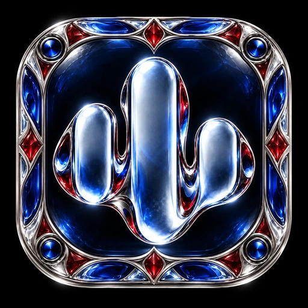
Ten independent overlays · real glyphs, fonts and matching waveform icons · app build 39 supplies the redesigned glass launcher icons

Pointed stained-glass frames, cobalt and crimson tracery, silver blackletter and skyline progress.
All 119 runtime roles · Pack ZIP

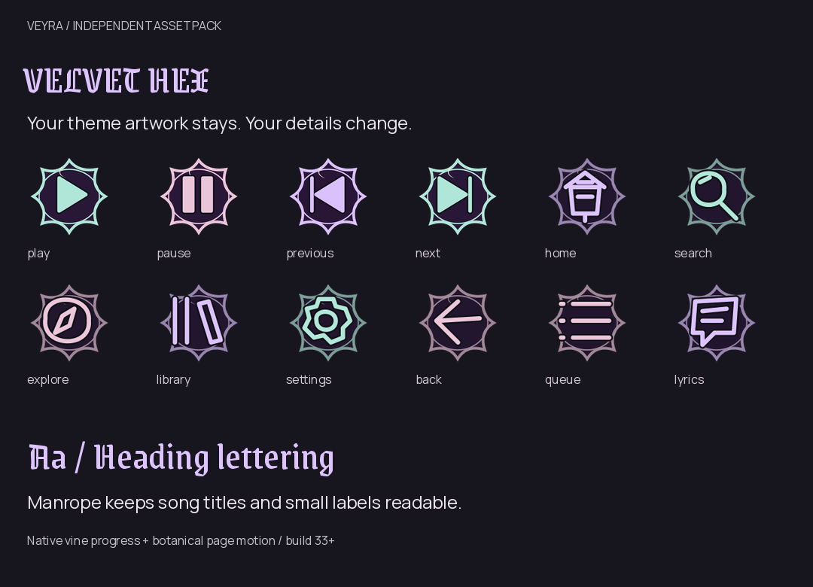
Plum velvet medallions, silver crescent filigree, gothic lettering and a delicate vine timeline.
All 119 runtime roles · Pack ZIP
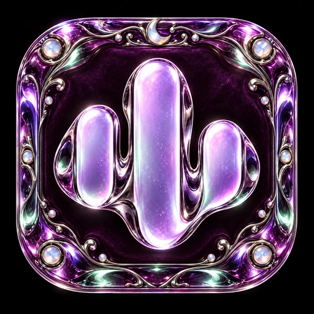
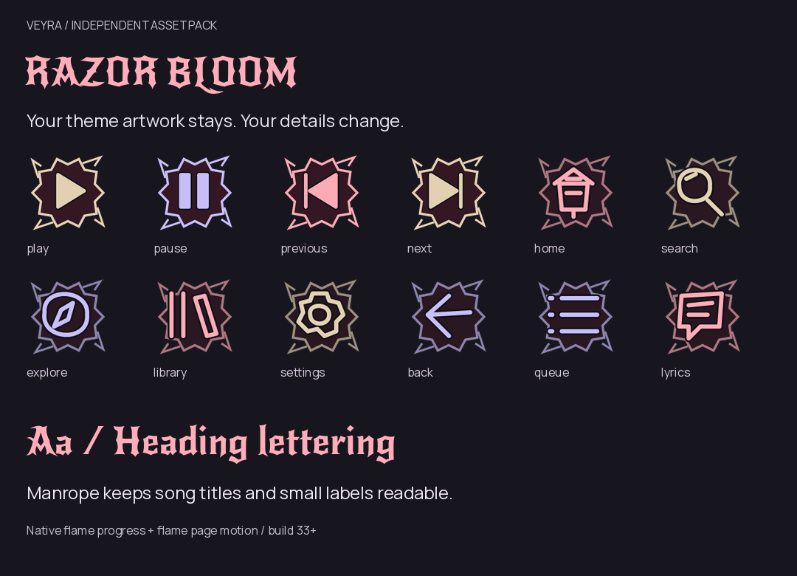
Rose-cut crimson seals, thorn corners, sharp rocker headings and an ember-ribbon seek treatment.
All 119 runtime roles · Pack ZIP
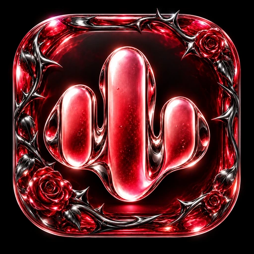
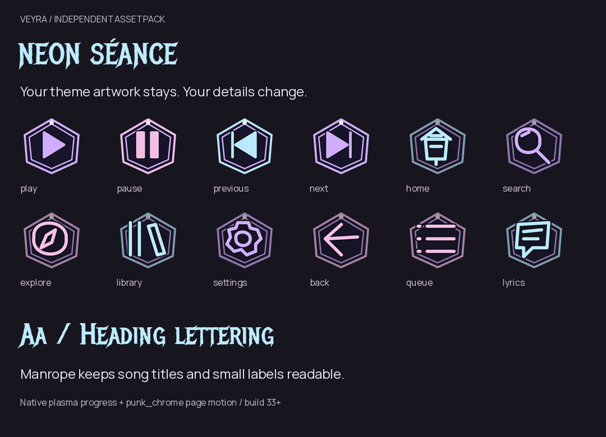
Spectral cyan geometry, violet double outlines, metal display lettering and plasma progress.
All 119 runtime roles · Pack ZIP
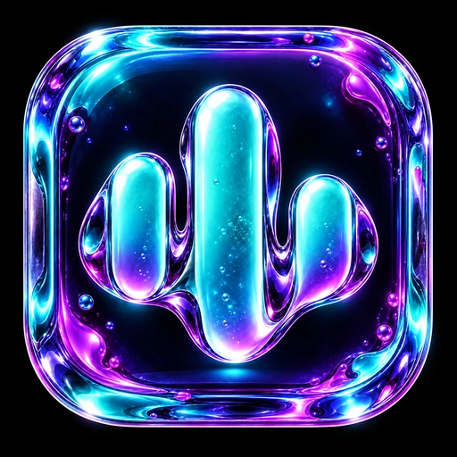
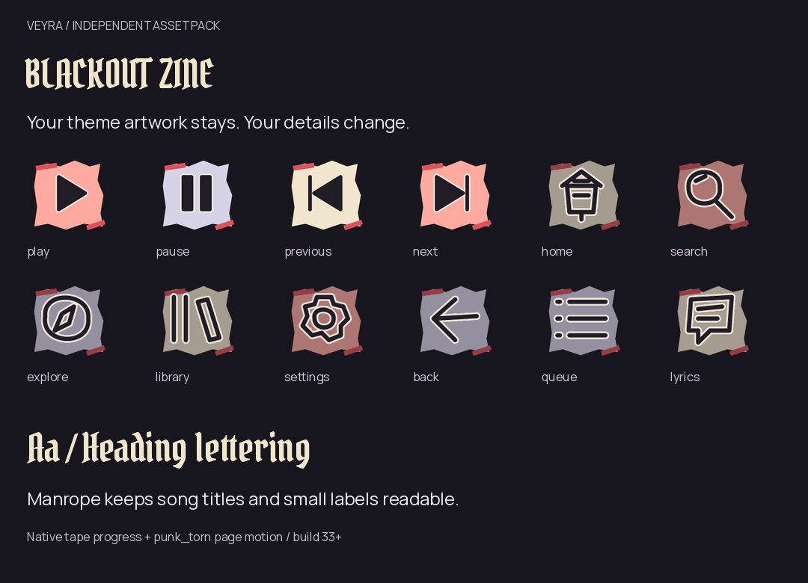
Torn charcoal and cream print blocks, red poster marks, pirate-gothic lettering and spliced tape progress.
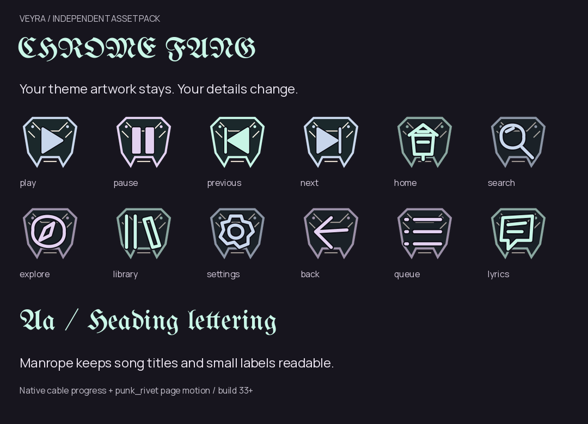
Fanged gunmetal panels, mint metal edges, traditional blackletter and a braided-cable timeline.
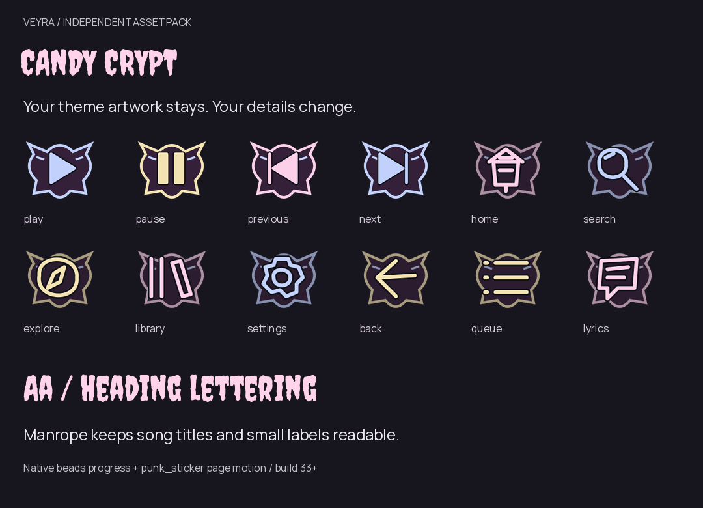
Pink batwing stickers, cream candy seals, playful horror lettering and a beaded progress track.
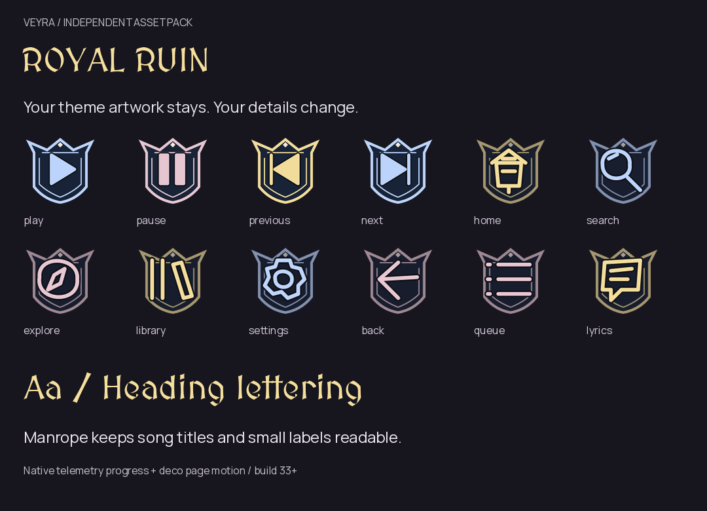
Antique-gold crowns, sapphire heraldic frames, medieval headings and instrument-like sector progress.
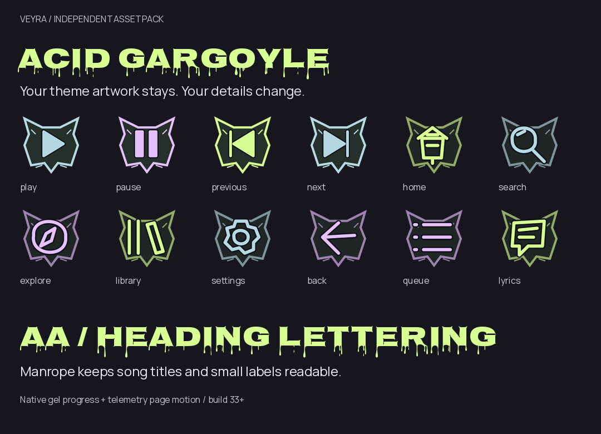
Horned stone cutouts, acid-green ink, dripping display letters and gel-dot seek markers.
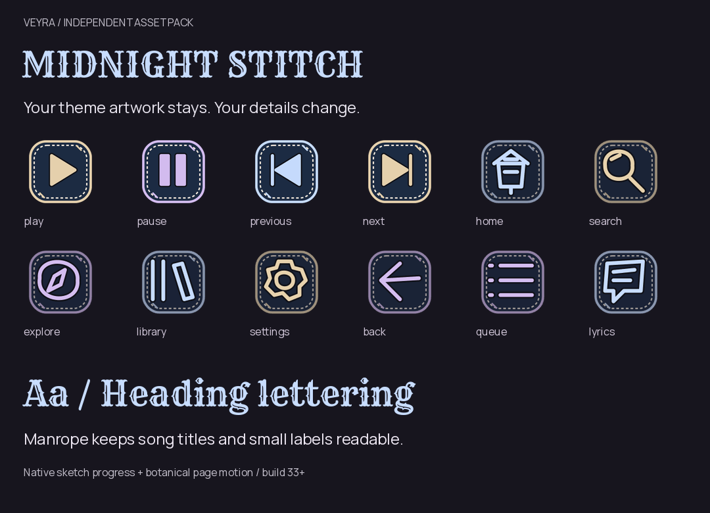
Dark denim patches, silver embroidery, western varsity lettering and a stitched pencil timeline.